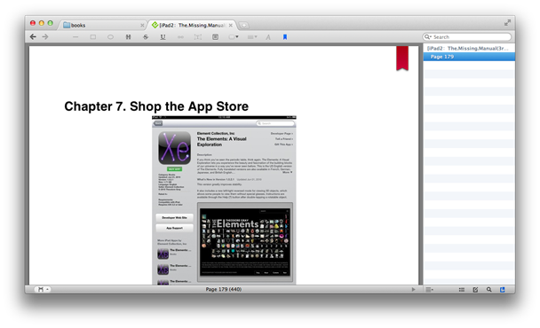
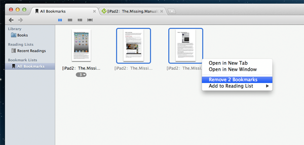

Bookmarks
Bookmarks are important reading positions that you want to remember, they are good start locations when you begin to read next time.
Insert a bookmark
Choose (command + b) or click the bookmark button on the toolbar, the bookmark button will turn highlighted (blue) and a red ribbon will appear at the right top corner of the current book page.
Remove a bookmark
To remove a bookmark, go to the page from which you want to remove bookmark, then choose (command + b) or click the bookmark button on the toolbar, the bookmark button will turn unhighlighted (black) and the red ribbon will disappear from the book page.
You can also remove bookmarks on the shelf. Click the "All Bookmarks" list on the shelf sidebar, all the bookmark items will be shown. Then find the book and the bookmarks you want to remove, select them ,ctrl-click and choose from the popup menu.
Open a bookmark
You can open a bookmark by double-clicking on a bookmark item in the shelf. If the book have not been opened, the book will be opened with the bookmark location as the launch position; if the book have been opened already, the book will get active and jump to the bookmark location.
By choosing , the book will be opened with the last inserted bookmark location as the launch position.
Jump to a bookmark
By choosing , the opened book will jump to the location of the selected bookmark. You can also jump to a bookmark location by selecting the bookmark from the bookmark pane in the document sidebar.